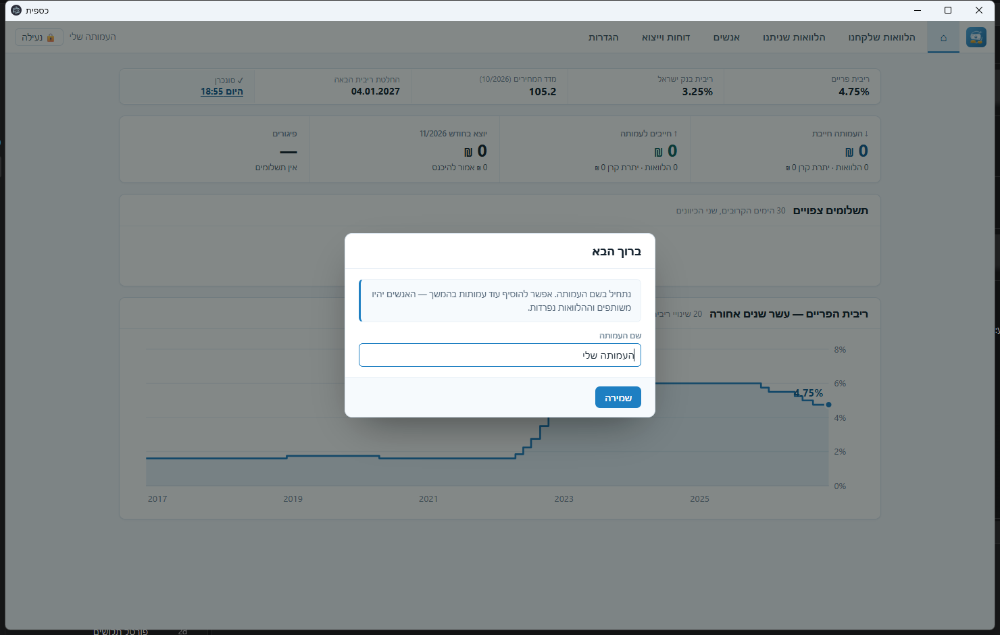
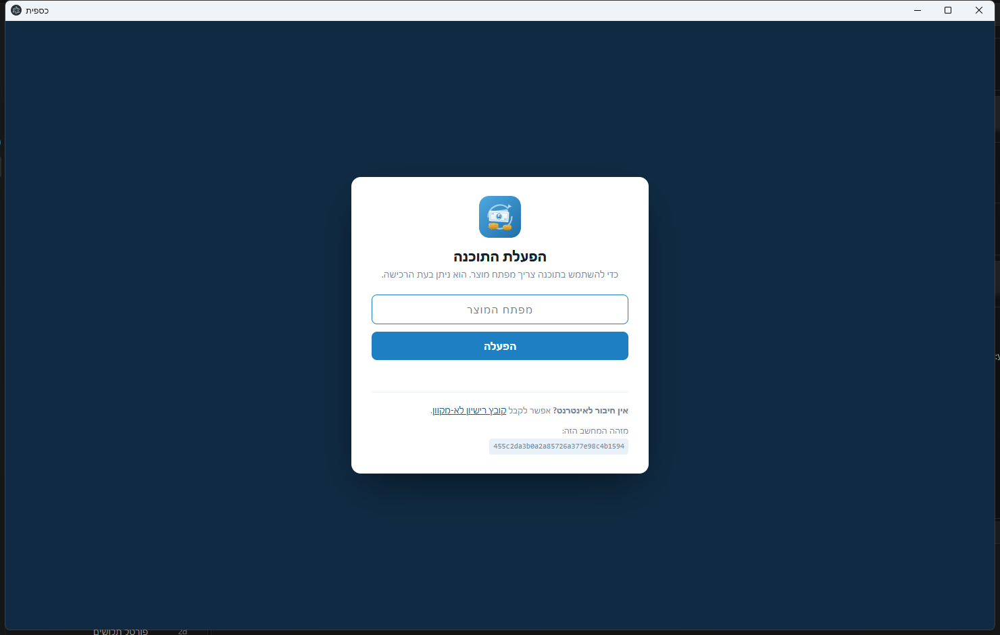
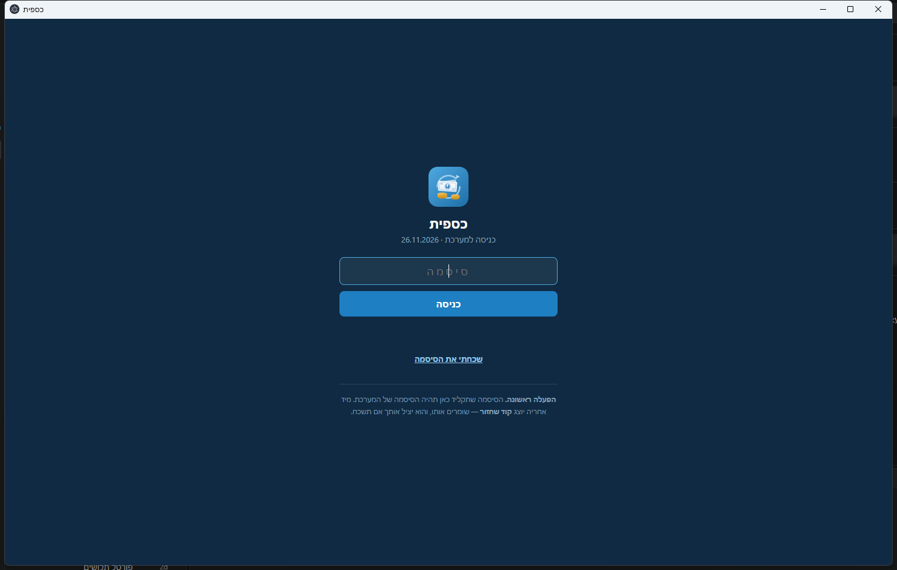

כספית מנהלת את ההלוואות שהעמותה קיבלה ואת אלה שנתנה — ומחשבת לוח סילוקין שמתאים לדף של הבנק, לא בערך.
מזהה את המחשב שלך…

אדם הלך לבנק, חתם על הלוואה בשמו, והעביר את הכסף לעמותה. החוב רשום עליו. הבנק גובה ממנו כל חודש. העמותה התחייבה להחזיר לו בדיוק את מה שהוא משלם — ואם החישוב לא מדויק, מישהו מהשניים מפסיד כסף אמיתי.
ההחזר לבנק אינו סכום קבוע. ריבית הפריים משתנה, מספר הימים בכל חודש שונה, ושנה מעוברת מוסיפה יום. לכן התשלום של פברואר אינו התשלום של מרץ. גיליון שרושם "החזר חודשי: 4,785" נכון בחודש הראשון, וטועה בכל אחד מהבאים. הטעות קטנה — כמה שקלים — אבל היא חוזרת כל חודש, לכל מלווה, לאורך שנים.
בשורה אחת: אדם שלקח הלוואה בשביל העמותה לא אמור לשלם על זה מכיסו, ולא אמור לרדוף אחרי התשובות. כספית דואגת שהמספר יהיה נכון, שהתשלום יצא בזמן, ושלכל שאלה תהיה תשובה מיידית.
שני צדדים נפרדים וברורים: אנשים שלקחו הלוואה בבנק והעבירו לעמותה את הכסף, ואנשים שקיבלו מהעמותה. בלי מונחים, בלי בלבול.
ריבית לפי ימים בפועל חלקי ימי השנה, לוח קרן נעול מההעמדה, ושינויי פריים שמתעדכנים לבד. בדיוק כמו שהבנק מחשב.
בכל פתיחה התוכנה מושכת את ריבית בנק ישראל ואת מדד המחירים. מועד ההחלטה הבאה תמיד מול העיניים.
גוררים את קובץ האקסל שהבנק נותן, והתוכנה מתיישרת לפיו — גם אם ההלוואה כבר באמצע הדרך.
יתרות ל-31.12, פילוח התחייבויות עד שנה ומעל שנה, והוצאות ריבית לשנת המס. מוכן להגשה.
עוברים על ההחזרים של החודש, משנים חשבון או סכום לשורה בודדת, ומייצאים לאקסל.
הסכם הלוואה, אישור קבלת כסף, מכתב תזכורת, אישור סילוק וריכוז יתרות — כולם מתבניות שאפשר לערוך.
האנשים משותפים לכל העמותות, ההלוואות נפרדות לגמרי. מחליפים בתפריט למעלה.
קובץ הנתונים מוצפן AES-256. גיבוי אוטומטי יומי, וקוד שחזור שמציל אותך אם הסיסמה נשכחה.
התוכנה לא מחייבת ריבית פיגורים מעצמה. היא שואלת: לחייב, להעביר לקרן בלבד, או לדחות.
רוב מחשבוני ההלוואות מחלקים את הריבית השנתית ב-12. הבנק לא עושה את זה. כספית נבנתה מול שני מסמכי בנק אמיתיים עד שכל שורה התאימה.
| השדה בדף הבנק | מה הבנק הציג | מה כספית חישבה | פער |
|---|---|---|---|
| יתרת הקרן בפועל | 171,629.32 | 171,629.27 | 5 אגורות |
| יתרה משוערכת | 171,951.51 | 171,951.47 | 4 אגורות |
| תשלום הבא משוער | 4,785.29 | 4,785.29 | מדויק |
| ריבית שטרם חויבה | 322.19 | 322.20 | אגורה |
| תאריך הסיום | 20.06.2030 | 20.06.2030 | מדויק |
שני הדברים שרוב המחשבונים מפספסים: הבנק מחלק את הריבית ב-ימי השנה בפועל (366 בשנה מעוברת, ותקופה שחוצה את 1 בינואר מתפצלת), והוא קובע את לוח הקרן ביום ההעמדה ולא מחשב אותו מחדש כשהפריים משתנה.


בודק מה הגרסה העדכנית…
התוכנה עובדת גם בלי אינטרנט. הוא נדרש להפעלה הראשונה, לחידוש הרישיון מדי כמה שבועות, ולעדכון ריבית הפריים והמדד.
הזיהוי נעשה בדפדפן שלך בלבד ולא נשלח לשום מקום. מזהה המחשב לרישוי אינו נקרא מהדפדפן — הוא מוצג בתוך התוכנה במסך ההפעלה, וממנו מעתיקים אותו.
כל מחשב מופעל פעם אחת עם מפתח מוצר. אחר כך התוכנה מחדשת את עצמה ברקע, ואם אין אינטרנט היא ממשיכה לעבוד עד שהרישיון פג.
פותחים את כספית, מקלידים את המפתח במסך ההפעלה ולוחצים "הפעלה". זהו — המחשב רשום.
מחשב נוסף? אותו מפתח עובד על מספר המחשבים שסוכם ברישיון. מעבר לזה — צריך להסיר מחשב ישן.
אין אינטרנט במחשב? פותחים את כספית, לוחצים "קובץ רישיון לא-מקוון", ומעתיקים משם את מזהה המחשב.
כדי שנוכל לעזור מהר, כדאי לצרף: מה ניסית לעשות, מה קרה בפועל, ואם זה קשור להלוואה מסוימת — גם את הצילום של דף הבנק שלא מתאים.